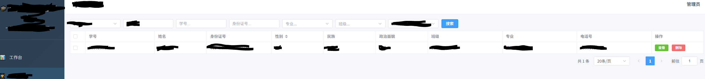

作为一名大专院校的一线辅导员，我的日常工作和很多人想象中的不太一样。我们学院没有统一部署现成的学工系统，很多看起来零碎、却直接关系到学生和财务、教学、日常管理的事务，最后都落在辅导员个人身上：奖助学金评选、学费收缴与退费核对、日常查宿与违纪登记，甚至学生要查自己的档案信息、拿成绩单，也都要直接来找辅导员处理。
以前没有系统的时候，这些东西全靠零散的 Excel 表格、聊天记录和纸质本子拼凑。一旦遇到具体事情，查起来就特别折腾：比如和财务核对退费或打款时，经常要向学生收集银行卡信息，结果总有学生填错位数、漏写支行或者写错开户行，来回核对沟通非常耗神；平时想快速翻看某个学生的手机号、家长联系方式或者历史情况，翻半天表也不一定顺手；还有评奖助学金、查宿和违纪这些事，原本就容易交叉，纸质和表格分散着记，用起来总觉得不够利索。
最让我觉得费劲的还有谈心谈话。辅导员和学生谈心谈话，不能只是嘴上聊完就算，还要形成记录、打印出来，我和学生各自签字，这叫“工作留痕”。以前每次谈完，还得自己手动整理排版成文档、再拿去打印签字，一套流程走下来，真正花在沟通本身上的精力反而被琐事切碎了。
一、为什么不等“全套规划”才动手？
我是水瓶座，骨子里不太喜欢被僵化的流程绑架，也不喜欢一上来就闭门造车，搞出一个看起来很宏大、但实际上半年都用不上的“大系统”。查宿、违纪联动、评奖助学金辅助这些工作痛点其实都还在，但我当时的想法很明确：先解决眼前最痛、最频繁的几个点，其他的遇到了再加，不想做无用功。
与其空想一套大而全的学工平台，不如先给自己做一套顺手的工具。趁着业余时间，我一点点把前后端和云服务串了起来，目前系统只聚焦在真正用得上的几个核心场景，没有做多余的学生端，也不去提前设计用不到的复杂功能。
二、目前真正跑通的三个核心场景
这套系统完全围绕“我自己用起来顺手、能立刻省时间”来落地，目前已经稳定用起来的重点是这三块：
- 学生档案与银行卡信息查询：把学生的个人基础信息、家长联系方式以及银行卡相关资料集中管理。平时需要核对学生信息或配合财务处理退费、打款相关事宜时，在系统里一查就能看到，不用再在零散表格和聊天记录里大海捞针。
- 成绩单后台一键下载：针对学生需要成绩单的场景，我没有额外做一套复杂的学生端，而是在我自己的管理后台里直接实现了一键下载。学生有需求时，我在后台点一下就能快速调取并下载对应文件，省去了在本地各个文件夹里翻找的时间。
- 谈心谈话记录提交与“双签留痕”：这是日常用起来最有体感的一块。每次和学生谈心谈话后，我直接在系统里把谈话内容提交上去，系统会自动生成格式规整的记录文件；我把文件打印出来，我签字、学生签字，既把谈话内容沉淀了下来，又把“工作留痕”的纸质签字闭环走通了。



三、技术架构：让云服务“各管一摊事”
一个人利用业余时间做全栈开发，最怕的就是把所有精力耗在服务器和数据库运维上。所以我采用的思路是轻量组合 + 云服务分工，让擅长的组件各管一摊事：
- 前端（Vue3）：负责界面交互与信息展示，把档案查询、谈话内容录入提交、文件下载等操作串起来，保持界面干净克制，重点放在效率而不是花哨特效。
- 后端（Flask）：放在自己的云服务器上运行，承担核心接口处理、业务逻辑以及谈心谈话记录文件的生成。Flask 足够轻量，单人开发和后续改需求都很直接。
- 数据库（MongoDB Atlas）：学生档案、谈话记录等数据交给云端的 MongoDB Atlas 托管。文档型结构对字段调整比较友好，也不用自己操心本地数据库的日常维护。
- 对象存储（Cloudflare R2）：成绩单以及系统生成的谈心谈话文件等对象存储内容，放到 Cloudflare R2 上管理，和业务数据分开存放，结构更清楚。
四、那些踩过又记不太清的坑，和卡最久的 R2
既然是个人从零搭全栈，一路上其实踩了不少坑，有些具体报错细节做完也就翻篇、记不太清了，但那种“明明逻辑看起来没问题，却在某个配置或边界上卡半天”的状态印象很深——比如前后端联调时的请求路径与跨域细节、云端数据库网络白名单与字段空值处理、导出文件时中文编码或格式对齐的小毛病，以及服务器代理转发规则的反复核对。这些零碎的坑，以后有空或者谁问起某一点时，我也会挑出来单独写成文章。
这当中真正让我卡了挺久的，是对接 Cloudflare R2 对象存储。一开始看中 R2 兼容 S3 协议、存储成本低，想着用来放成绩单和生成的留痕文件很合适，结果第一步就卡在了信用卡上——开通和验证阶段需要绑定信用卡，光是解决支付与账号验证这一关就折腾了不少时间。
迈过信用卡这一步之后，真正把代码接进 R2 也不是一帆风顺的。客户端初始化、Endpoint 与凭证配置、文件上传和下载接口的联调，每一步都要反复对照文档和日志排查。直到把文件真正存进去、再从后台顺利下载出来那一刻，才算把这条链路彻底打通。
import os
import boto3
from botocore.config import Config
def create_r2_client():
return boto3.client(
service_name="s3",
endpoint_url=os.environ["R2_ENDPOINT_URL"],
aws_access_key_id=os.environ["R2_ACCESS_KEY_ID"],
aws_secret_access_key=os.environ["R2_SECRET_ACCESS_KEY"],
config=Config(signature_version="s3v4"),
region_name="auto",
)五、安全边界与写在最后
既然系统里存着学生的个人信息、联系方式和银行卡等敏感数据，访问控制就不能马虎。我没有从头写一套笨重的权限系统，而是直接在云服务器上用 Nginx 做反向代理，并开启了基础认证（HTTP Basic Auth）。带着学生数据的访问都走这层认证把关，对于个人自用来说，既简单直接，又能守住基本的访问边界。
到现在为止，这套系统并不是一个“功能大而全”的成品，查宿、违纪、评奖助学金等其他痛点也依然存在。但对我来说，这恰恰是最舒服的状态：真实遇到哪方面的麻烦，再针对性地往里加功能；没必要提前做的事，就不去折腾无用功。
写下这篇记录，既是为了留存自己从零搭出这套全栈系统的真实过程，也是想在辅导员之外，给自己立一张更完整的名片——一个会观察一线痛点、能独立把想法变成可用系统的水瓶座开发者。以后如果有了新的折腾、新的经验或者谁想了解哪方面，我也会单独出一篇针对那个问题的文章。
评论区（Giscus）